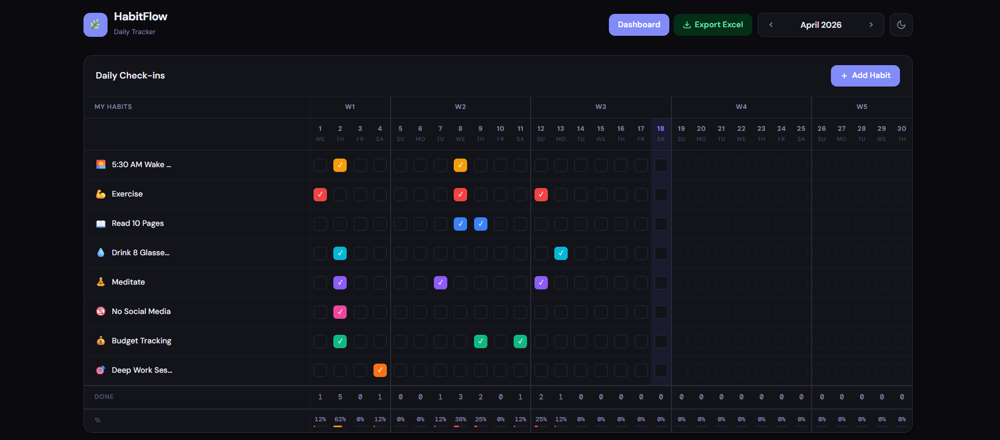
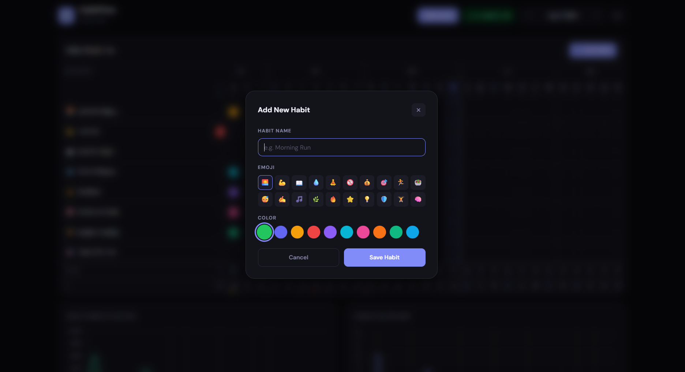
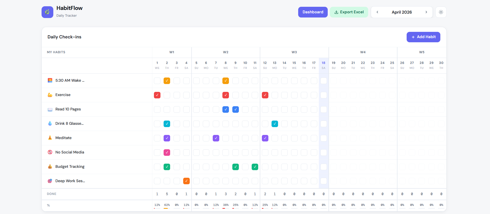
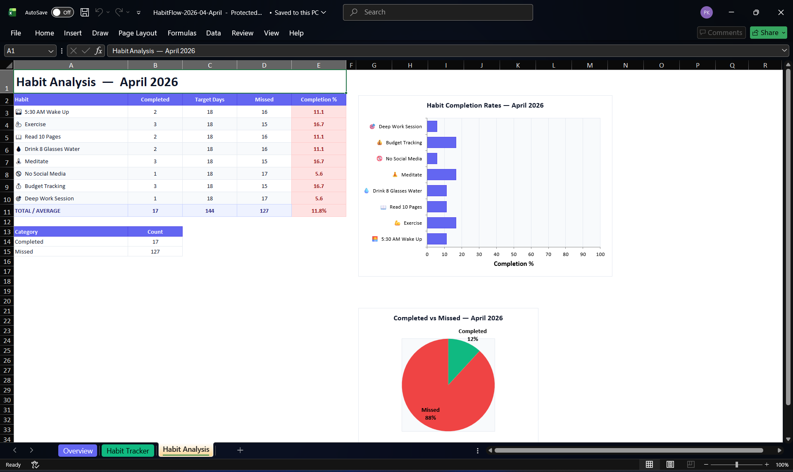
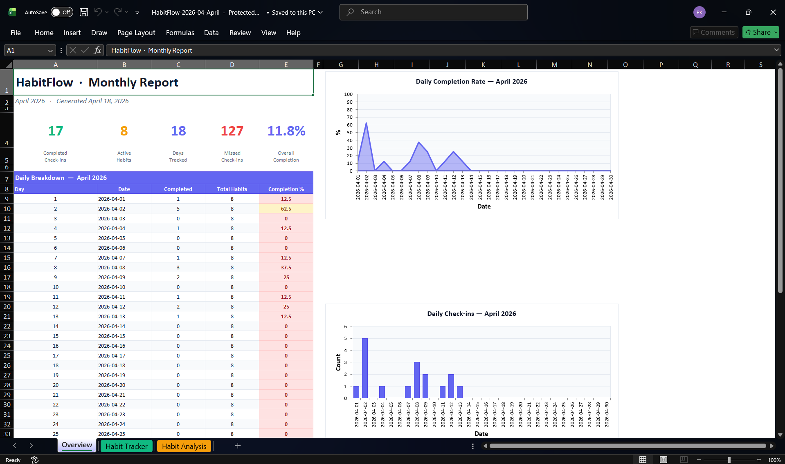
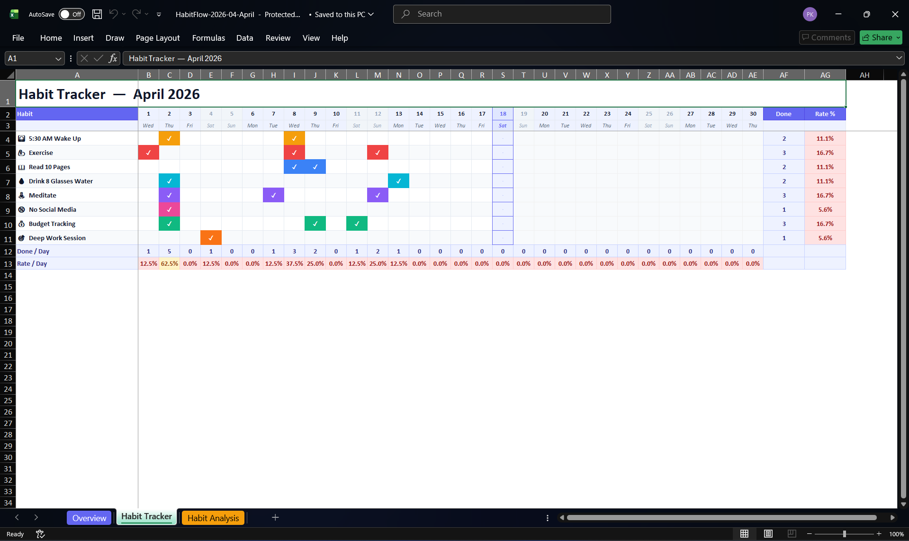

HabitFlow
Project Overview
HabitFlow is a self-hosted habit tracker built with Python and Flask. It runs locally on your machine, stores all your data in a SQLite database, and never sends anything to an external server.

You get two main views: a daily tracker where you check off habits across a monthly grid, and a dashboard where you can review your progress over time with charts and stats. It also lets you export your habit data to a formatted Excel file, which can be useful for deeper review or record-keeping.
The app is available as a one-click Windows executable from the GitHub Releases page — no Python install required.
Why I Built This
Most habit tracking apps are either locked behind subscriptions, require an account, or store your data on someone else's server. I wanted something simpler: a tool that just works, stays on your machine, and does not ask for anything in return.
I built this as a side project to solve a practical problem I had with existing tools, to go deeper into Flask and SQLite, and to share a working, well-structured example with the open-source community.
The project also gave me a chance to explore packaging a Python web app as a standalone Windows executable using PyInstaller, which turned out to be one of the more interesting technical challenges of the build.
The Problem
Most habit trackers require an account, an internet connection, or a paid plan to unlock basic features. Even the free ones store your data on external servers, which is not ideal if you care about privacy.
HabitFlow removes all of that. You download it, run it, and it works. Your data lives in a file on your own machine. There is no login, no sync, no cloud dependency.
It is also useful as a reference codebase for developers who want to see how to build a full Flask app with a database, a multi-page UI, chart integration, and file export — all in a single, readable Python file.
Key Features
Monthly Grid
Habit tracking grid with checkboxes, per-day totals, and mini progress bars
Dashboard & Charts
Monthly stats, KPI cards, and yearly trend charts via Chart.js
Excel Export
Three formatted sheets: Overview, Habit Tracker, and Habit Analysis
One-Click EXE
Packaged as a single Windows .exe via PyInstaller — no setup needed
- Add, edit, and delete habits with custom emoji and color labels
- Light and dark theme with preference saved in the browser
- Soft-delete for habits so historical completion data is preserved
- Idle watchdog that closes the background process when the app has not been used for two minutes
Screenshots
Tracker Page (Dark Mode)

Adding a New Habit

Tracker Page (Light Mode)

Excel Export

Overview Sheet

Habit Tracker Sheet

Habit Analysis Sheet
How It Works
- Start the app — Run
app.pydirectly or launchHabitFlow.exe. Flask starts on the first available port from a predefined list and opens your browser automatically. - Track habits — The browser loads the tracker page. Client-side JavaScript calls the Flask API to fetch your habits and completions for the current month and renders the grid.
- Check off habits — Clicking a checkbox sends a toggle request to
/api/completions/toggle. Flask writes the change to the SQLite database and responds immediately. - View your dashboard — The dashboard page calls
/api/stats/...and/api/stats/year/<year>to fetch monthly and yearly summaries, which are rendered as Chart.js charts and stat cards. - Export to Excel — Clicking the export button navigates to
/api/export/<year>/<month>. Flask uses XlsxWriter to build a multi-sheet.xlsxfile on the fly and streams it back as a download. - Data storage — All data is stored in a local SQLite file at
%APPDATA%\HabitFlow\habits.dbon Windows, or~/.local/share/HabitFlow/habits.dbon other systems.
Tech Stack
Backend
Frontend
Data & Export
Packaging & CI
My Contribution
I designed and built this project end to end.
- Defined the scope and user experience from scratch
- Designed the SQLite schema and all Flask API routes
- Built the full tracker and dashboard UIs using Jinja2 templates and vanilla JavaScript
- Integrated Chart.js for monthly and yearly visualizations
- Wrote the Excel export logic with three formatted worksheets using XlsxWriter
- Packaged the entire app as a single Windows
.exeusing PyInstaller, including bundling templates and static files - Set up the GitHub Actions workflow to build and publish the exe automatically on new version tags
- Wrote the README with setup instructions and screenshots
Challenges & Learnings
Bundling Flask templates inside a PyInstaller executable
PyInstaller compiles everything into a single binary, but Flask needs to find its templates/ and
static/ folders at runtime. The fix was a small _resource() helper that checks
sys._MEIPASS when the app is frozen and falls back to the script directory otherwise. Getting
this right required understanding how PyInstaller handles file paths inside the bundle, which is not
obvious the first time.
Choosing a port without conflicts
Since the app runs as a local server, a hardcoded port could conflict with other tools on the user's machine.
I solved this by defining a small list of candidate ports and picking the first one that is not in use at
startup via socket.connect_ex. This made the app much more reliable across different environments.
Building the Excel export
XlsxWriter is powerful but verbose. Writing the export_excel function — which generates three
formatted worksheets with embedded charts — took significant iteration. The challenge was balancing
formatting detail with code clarity, and handling edge cases like missing data for certain months.
Handling the idle watchdog for the packaged exe
When the app runs as an exe, there is no terminal to close it from. I added a background daemon thread
that monitors the time since the last browser request and exits the process automatically after two minutes
of inactivity. Coordinating this with Flask's request lifecycle and making it reliable without interfering
with normal use required some careful thinking.
Core Logic: How the Code Works
The full source is a single Python file. Below are the key implementation patterns that make the app work.
Resource Path Resolution (PyInstaller-Safe)
import sys, os
def _resource(relative_path):
"""Resolve file paths inside a PyInstaller bundle or dev environment."""
if hasattr(sys, '_MEIPASS'):
return os.path.join(sys._MEIPASS, relative_path)
return os.path.join(os.path.abspath('.'), relative_path)
app = Flask(
__name__,
template_folder=_resource('templates'),
static_folder=_resource('static'),
)Port Selection Without Conflicts
import socket
CANDIDATE_PORTS = [5050, 5051, 5052, 5053, 5054]
def find_available_port():
for port in CANDIDATE_PORTS:
sock = socket.socket(socket.AF_INET, socket.SOCK_STREAM)
result = sock.connect_ex(('127.0.0.1', port))
sock.close()
if result != 0:
return port
raise RuntimeError("No available port found")Habit Completion Toggle API
@app.route('/api/completions/toggle', methods=['POST'])
def toggle_completion():
data = request.get_json()
habit_id = data['habit_id']
date = data['date']
db = get_db()
existing = db.execute(
'SELECT id FROM completions WHERE habit_id = ? AND date = ?',
(habit_id, date)
).fetchone()
if existing:
db.execute('DELETE FROM completions WHERE id = ?', (existing['id'],))
else:
db.execute(
'INSERT INTO completions (habit_id, date) VALUES (?, ?)',
(habit_id, date)
)
db.commit()
return jsonify({'status': 'ok'})Idle Watchdog for the Packaged EXE
import threading, time
last_activity = time.time()
IDLE_TIMEOUT = 120 # seconds
@app.before_request
def track_activity():
global last_activity
last_activity = time.time()
def watchdog():
while True:
time.sleep(30)
if time.time() - last_activity > IDLE_TIMEOUT:
os._exit(0)
thread = threading.Thread(target=watchdog, daemon=True)
thread.start()Installation & Setup
Option 1: Download the EXE (Windows)
# 1. Go to the GitHub Releases page
https://github.com/inboxpraveen/Daily-Tracker/releases
# 2. Download HabitFlow.exe
# 3. Double-click to run — your browser opens automaticallyOption 2: Run from Source
# Clone the repository
git clone https://github.com/inboxpraveen/Daily-Tracker.git
cd Daily-Tracker
# Create a virtual environment
python -m venv venv
source venv/bin/activate # Windows: venv\Scripts\activate
# Install dependencies
pip install -r requirements.txt
# Run the app
python app.pyFuture Improvements
- Add a weekly summary view alongside the monthly grid
- Support habit streaks with visual indicators on the tracker
- Allow users to reorder habits via drag and drop
- Add a simple import format so data can be moved between machines
- Support for recurring habit schedules beyond simple daily tracking
- Optional CSV export alongside the existing Excel export
Closing Note
HabitFlow is fully open source under the Apache 2.0 license. It was built as a personal side project to solve a real problem and to share a working, understandable example with other developers.
If it helps you track your habits, gives you a reference for building a Flask app, or serves as a starting point for your own tool — that is exactly what it was meant to do.
Bug reports, suggestions, and pull requests are welcome.